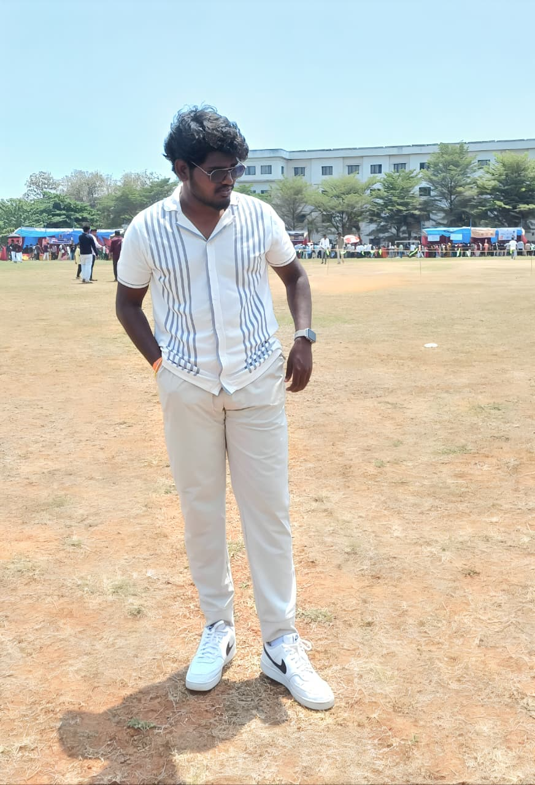

DAILY TRANSMISSION / 01
I build.
I experiment.
I evolve_
A Computer Science student turning ideas into software, interactive experiences, and AI-powered experiments.
STATUSAvailable for internships · placements · collaborations

PRIMARY PORTRAIT / 01C. YUVA AKHILSoftware
Software
& AI builder
Visakhapatnam, India
CSE / CREATIVE TECHNOLOGY
APPLICATIONSdrag, explore, open a file